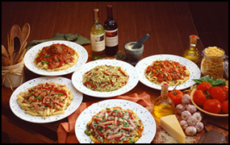
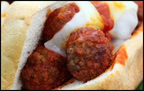
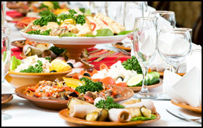

Why John Anthony's?The D’Acierno Family has owned and operated John Anthony’s since 1985 serving the finest Itallian specialties, fresh seafood and meats, along with creative specials, homemade soups, fresh dough pizza and grilled salads! Our menu and weekly seasonal specials boast a variety of options that will appeal to families as well as the discerning pallet looking for that distinct dining experience. Children can order from the kids' menu while parents dine on an unusual special all at a reasonable price with healthy portions!
Aunt Carol has made the wedding soup, meatballs and sauce since the day we opened our doors! She has hand rolled every homemade meatball with love and her wedding soup is by far the best in western PA. Our spaghetti sauce appeals to the fussiest Italians. |
Come dine with us!Our focus has always been on the “total dining experience”. We strive to give outstanding service from the moment you walk in our door. Our servers are well trained and eager to make your visit a most satisfying one. Our chefs are dedicated to taste, consistency, originality and promptness. Once we get you in our door you will be a returning customer!
Our menu consists of always homemade soups, Fresh salads ranging from grilled Chicken, Steak and Shrimp to Antipastos. Our appetizers are hand breaded. Burgers are 8oz of fresh locally bought, hand formed quality ground meat, grilled over an open flame! Our award winning Fish sandwich is fresh breaded Icelandic Cod. Hoagies are toasted and over stuffed! All of John Anthony’s Italian entrees are made to order with imported pastas and the freshest components. The John D. Special is a combination of parmesans and peppers like nothing you have ever tasted! (sandwich or entree)
From steaks to shrimp to fresh dough pizza, there's something for everyone. The kids' menu offers healthy options including Ravioli and Chicken salads.
|
Have your next party here.Have your next Family gathering in our beautiful dining room! We specialize in banquets of all sizes from 20 to 120 people, Rehearsal Dinners, Wedding and Baby Showers, Baptisms, Birthdays, Communions, Retirements and Anniversaries.
The large windows and high ceilings create a perfect atmosphere with linen table clothes and attentive servers. John Anthony’s offers fabulous buffet options at a variety of prices and selections! Choose From a deli style buffet, grilled salad buffet, wrap buffet to our most popular dinner or lunch buffets!
We also specialize in funeral luncheons. At a time when you need to be focused on yourself and your family we take care of the luncheon details with no concerns and stress free for you!
John Anthony’s has just reopened our down stairs banquet room which is perfect for private corporate meetings and luncheons.
Print out a contract and contact us today. |